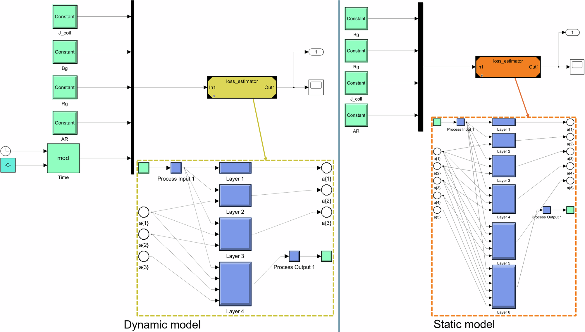

论文资料
Advanced deep-learning model for temporal-dependent prediction of dynamic behavior of AC losses in superconducting propulsion motors for hydrogen-powered cryo-electric aircraft
已取得公开摘要，图文解读尚未完成
已取得公开摘要，图文解读尚未完成。取得完整资料并通过核验后，这个地址会更新为图文解读。
公开摘要
Superconducting motors offer high power density, compactness, and efficiency for hydrogen-powered cryo-electric aircraft, but AC operation in cryogenic temperatures produces thermal losses that must be estimated accurately and rapidly at the design stage to optimize efficiency, minimize cryogenic heat load, and maximize specific power density. Traditional modeling approaches fall short—Finite-element is too slow/costly for system-level models, analytical models and look-up tables lack accuracy/flexibility, and earlier intelligent models gave only cycle-averaged (static) losses. Here we demonstrate AI can rapidly and accurately predict dynamic AC losses for superconducting propulsion motors. Using a large dataset of motor configurations, our AI-driven approach both predicts cycle-averaged and time-dependent morphology of instantaneous AC loss waveforms across various operating conditions and generalizes to unseen designs. Integrated into system-level model-based design, these AI-surrogate models enable rapid model trials, compliance checks, and the discovery of integration issues within simulated environments before propulsion motor deployment. Our deep learning-based model achieves a prediction time of less than 9 ms with a 99.97% accuracy (R 2 ), making it suitable for system-level modeling of electric powertrains in hydrogen-powered cryo-electric aircraft. Furthermore, we benchmarked 14 AI and 2 mathematical fitting techniques for estimating average AC losses, providing comparative performance analysis. The results highlight that AI-based surrogate models enable high-accuracy, low-latency loss predictions to achieve optimal performance in superconducting propulsion motors in aircraft powertrain design.
原图未改动。以下图注来自标注的来源，不据此补写摘要未报告的实验结论。
已取得的论文原图


已取得的论文原图


已取得的论文原图

